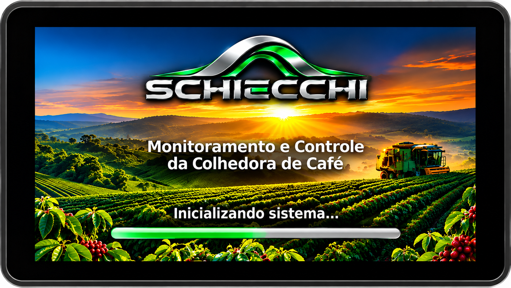
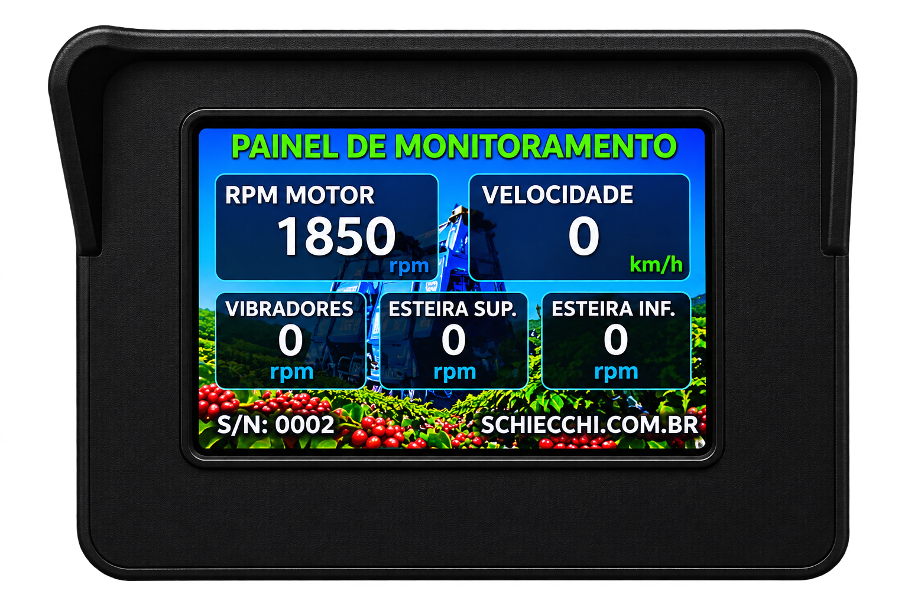
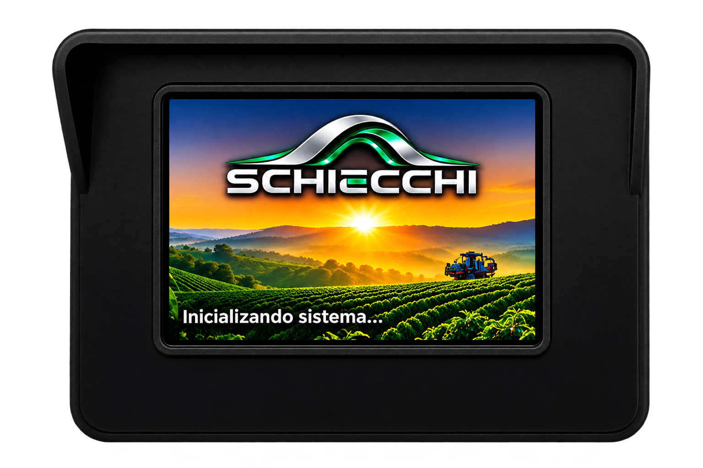

SISTEMA COMPLETO
PLUS
- Display touch 10,1″
- Monitoramento
- Controle automático de velocidade
- Joystick eletrônico
- Calibrações
- Wi-Fi
- Relatórios de trabalho
MONITORAMENTO E CONTROLE DE COLHEDORAS DE CAFÉ
Soluções SCHIECCHI desenvolvidas para integrar monitoramento, conectividade e controle à operação de colhedoras de café.
PLUS ESSENCIAL
FALE COM A SCHIECCHI
SISTEMA COMPLETO · PRINCIPAL
CONTROLE E MONITORAMENTO — DISPLAY TOUCH 10,1″
Sistema completo para acompanhamento e controle da operação da colhedora, reunindo informações, ajustes e recursos de conectividade em uma interface touch de 10,1″.


APLICAÇÃO REAL · TRÊS PONTAS — MG
PARCEIRO DA APLICAÇÃO: RONALDO MÁQUINAS
O SCHIECCHI PLUS já está aplicado em colhedora de café TDI em Três Pontas, Minas Gerais, integrando monitoramento dos principais parâmetros da máquina, controle de velocidade, atuação eletrônica, calibrações e conectividade em uma única solução.
A aplicação demonstra a integração entre eletrônica, software e controle, oferecendo ao operador uma interface centralizada para acompanhar a operação.
MONITORAMENTO OPERACIONAL · DISPLAY 3,5″
Solução compacta para acompanhamento dos principais parâmetros da colhedora, com visualização direta no display e recursos de configuração e monitoramento via Wi-Fi.


DUAS SOLUÇÕES SCHIECCHI
SISTEMA COMPLETO
MONITORAMENTO COMPACTO
COLHEDORAS DE CAFÉ
Conte à SCHIECCHI sobre a colhedora e as informações que você deseja acompanhar.